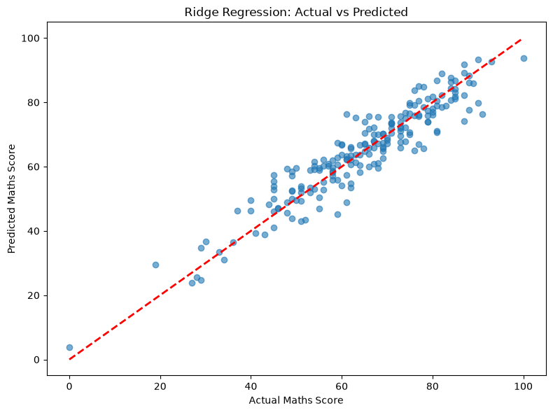
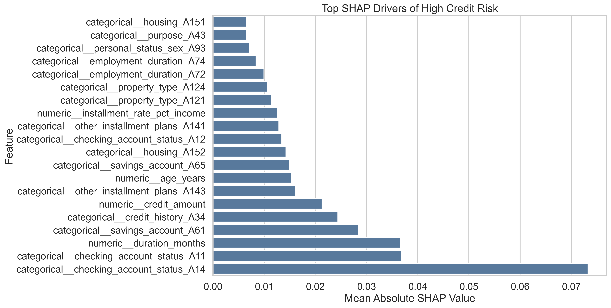
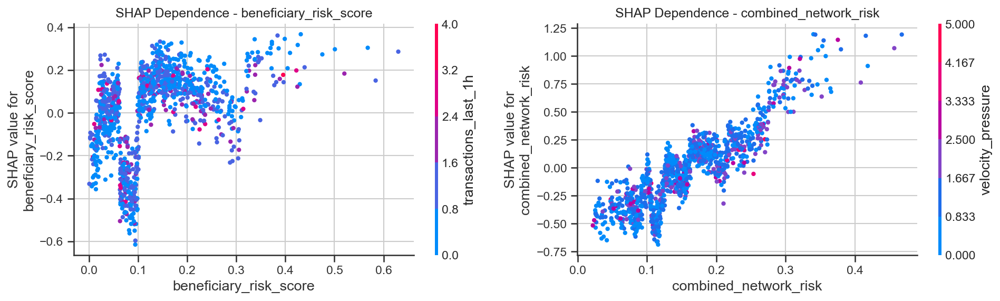
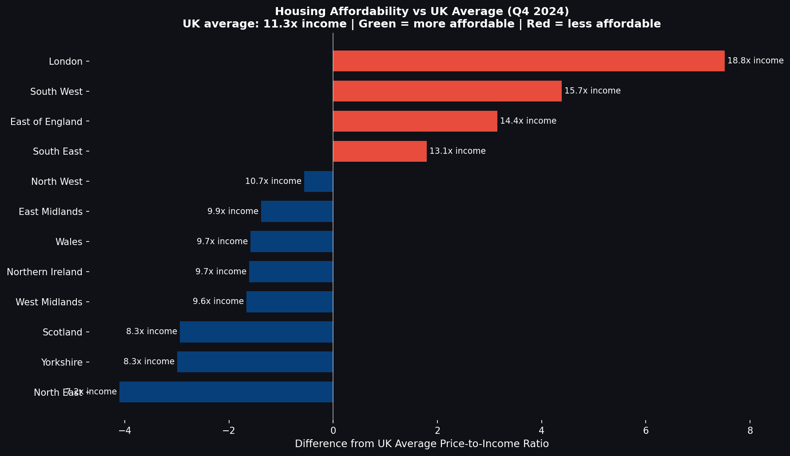
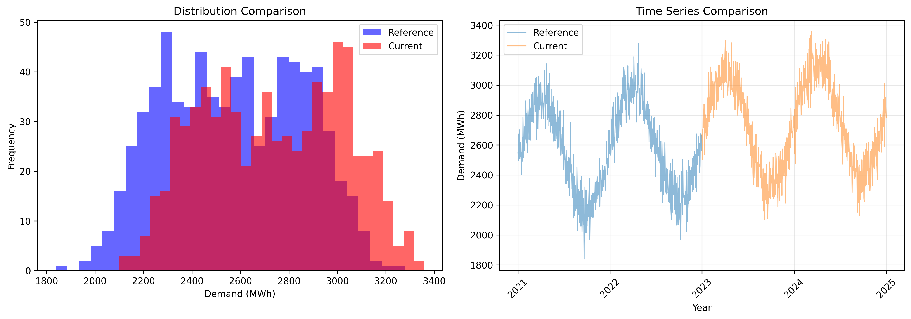
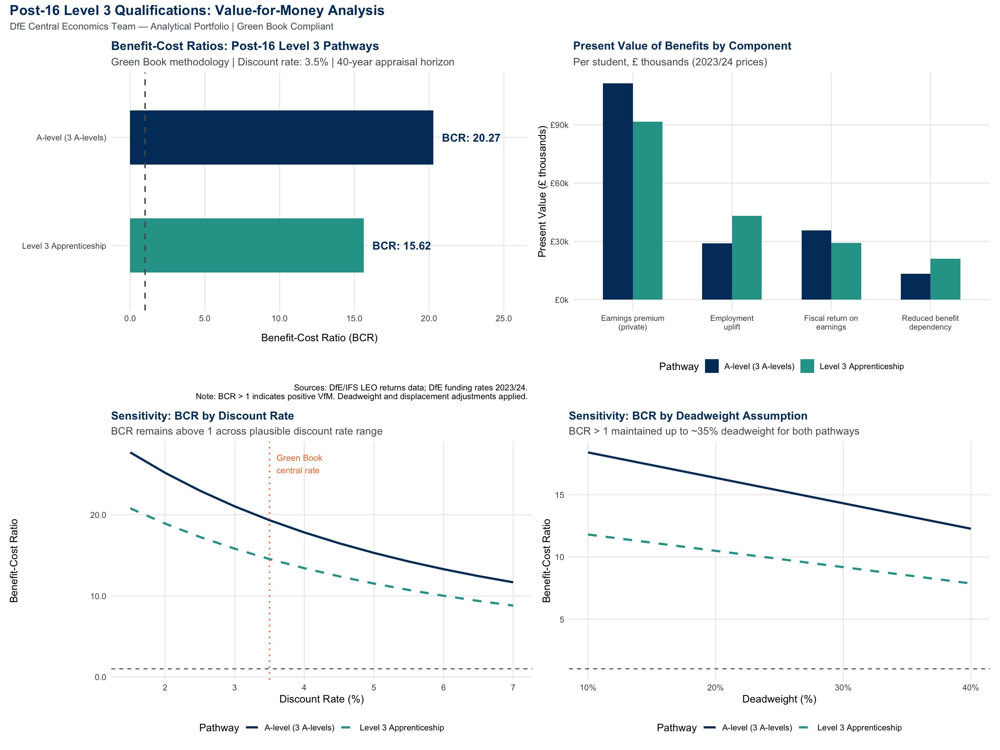
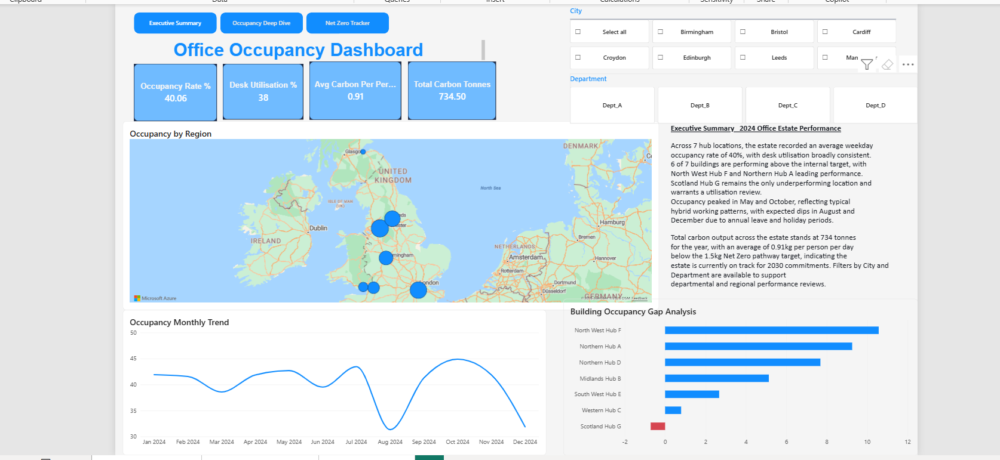
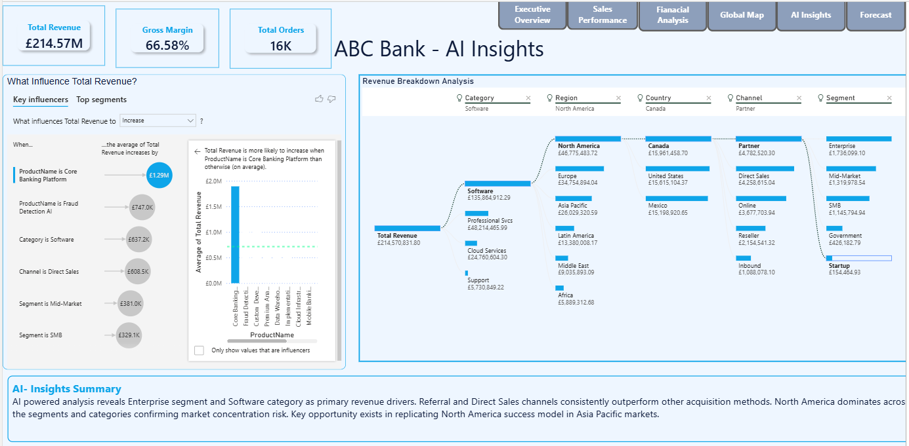

Project Evidence
Portfolio by role fit
Short, evidence-led project examples aligned to Finance, Data/BI, Data Science and Economics roles.
Data Science

Python • Student PerformanceStudent Performance Prediction
Built a student risk model to identify underperformance patterns early and support timely intervention planning.
This helped show how early intervention could protect retention, engagement and fee income.

Python • SHAP • Credit RiskAI Credit Risk and Financial Intelligence Platform
Built a decision-support workflow to predict default probability and translate model scores into approve, manual review or reject actions.
The workflow supported explainable lending decisions, expected loss analysis and portfolio risk monitoring.

Fraud • SHAP • RiskFraud and Scam Detection
Built a risk-scoring model using transaction behaviour, beneficiary risk and network indicators to identify suspicious scam patterns.
It created explainable risk bands so investigation teams could prioritise high-risk cases for review.

ONS API • XGBoost • SHAP • FastAPIUK Regional Housing Market Analysis
Built an end-to-end ML pipeline analysing UK regional house prices, affordability and policy-relevant market drivers from 2010 to 2024.
The analysis showed London reaching 18.8x income while Scotland and the North East remained below the UK affordability average.
Forecasting and Economic Appraisal

Forecasting • Scenario Analysis • PythonEnergy Demand Forecasting and Capacity Planning
Built a forecasting workflow to compare reference and current demand patterns, identify shifts in demand distribution and support capacity planning.
This helped decision-makers anticipate demand peaks, assess operational pressure and plan resources earlier.

R • BCR • Green BookPost-16 Education Value-for-Money Appraisal
Compared A-level and Level 3 apprenticeship pathways using cost-benefit analysis, present value of benefits and sensitivity testing.
The analysis showed BCRs of 20.27 and 15.62, both above the value-for-money threshold.
Power BI and Executive Dashboards

Power BI Service • RLS • DAXOffice Occupancy Dashboard
Built an executive estate dashboard tracking occupancy rate, desk utilisation, carbon output, regional performance and building occupancy gaps.
It supported estate planning, utilisation reviews, hybrid working decisions and net-zero performance monitoring.

AI Insights • Decomposition TreeEnterprise Sales Performance and AI Insights Dashboard
Analysed regions, products, margin, cost-to-serve and customer concentration to support reinvest, improve, exit or shutdown decisions.
This enabled leadership to focus investment on profitable growth areas.
Additional Project Evidence
Delivery and service improvement work
Supporting projects showing practical experience in process improvement, requirements thinking, delivery tracking and operational reporting.
Sustainability and Value Savings Tracker
Designed a savings tracking database and dashboard to monitor planned savings, actual savings, forecast variance, milestones, risks and RAG status across improvement schemes.
This demonstrates finance tracking, governance reporting and benefits realisation.
Student Engagement Portal
Analysed user needs for a student engagement portal, covering communication, support requests, staff visibility, user stories, acceptance criteria, UAT support and training documentation.
This demonstrates requirements analysis, stakeholder engagement and user-centred service improvement.
Caseworker Application Tracker
Produced a casework-style tracking concept to improve visibility of application status, overdue items, bottlenecks, ownership, performance measures and management reporting.
This demonstrates process mapping, backlog thinking, acceptance criteria and operational KPI design.
Expertise
Where I add value
Finance / FP&A
Budgeting, forecasting, variance analysis, P&L, cash flow, business cases and investment appraisal.
Data / BI
SQL, Python, Power BI, DAX, dashboards, KPI reporting and executive insight.
Economics / Appraisal
Value for money, benefit-cost ratio, sensitivity analysis, policy evidence and investment decisions.
Data Science
Machine learning, segmentation, risk scoring, model evaluation, R and Python analytics.